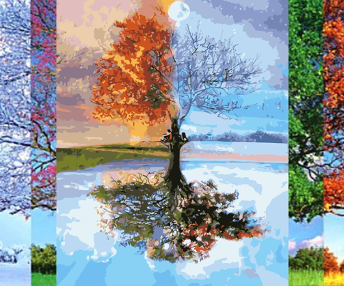
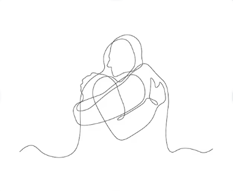

El amor como prioridad
“Que las tinieblas nunca puedan opacar la razón del florecer de un amor sincero.”La mayoría de las personas no tienen la culpa de no descubrir la importancia de priorizar el amor para obtener resultados positivos que reconforten el pensamiento de quienes ...
Leer más
¿Amar duele? ¿Verdad o mito?
"Espina que hiere son las acciones del que aún dañando el alma declara que ello es amar.”¡No! Amar no debería doler ni causar daño; más bien, por las condiciones que el mundo ofrece, llena las mentes con apariencias engañosas, como si tomar veneno fuera ...
Leer más

Las estaciones del amor
"Suspiro que se va es el sentimiento cuando no es real, más joya preciada es cuando el amar es una prioridad."Cuán hermoso y juguetón llega el amor, como la primavera llena de armonía. El inicio firme del tiempo sutil traerá días cálidos para que, como la...
Leer más

El amor como un abrazo lleno de shalom
“Como una nube que cubre el sol para sofocar el calor, es el amor cuando abriga el corazón.”Las horas transcurren en el reloj, las mentes se enfocan en pensar los nuevos objetivos para continuar la siguiente etapa de lo que encierran sus actividades. El e...
Leer más
¿Querer o amar?
“No hay desafío ni batalla que pueda prevalecer cuando amar es un placer." "Camino oscuro es la visión de quien confunde el sentimiento de un querer con la bendición de poder amar.”¡Marineros, no se aflijan! Vamos, todos listos para zarpar, suban anclas c...
Leer más